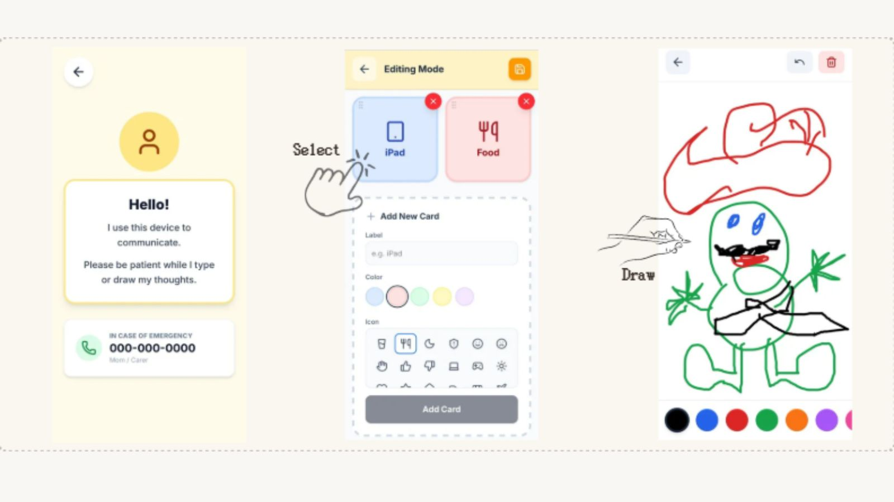

AAC / Accessibility
KAKEHASHI（デジタルコミュニケーションボード）
KAKEHASHI（デジタルコミュニケーションボード）
使い方ガイド
言葉での説明が難しいときに、絵カードや短文カードをタップして意思表示できるデジタルボードです。
支援者や周囲の人が、本人の「意図」を取り違えにくくすることを目的としています。

1 このアプリでできること
意思表示の補助
絵カードと短文をタップするだけで、自分の気持ちや要望を相手に伝えられます。
認識ズレの防止
視覚的なカードを使うことで、支援者が本人の意図を誤解するリスクを減らせます。
状況別の切り替え
学校・病院・災害時など、場面に合わせたカードセットを瞬時に切り替え可能です。
2 基本的な使い方
A. ホーム（カテゴリ選択）
大きなボタンで「体調」「気持ち」「場所」などのカテゴリが表示されます。伝えたい内容のカテゴリをタップします。
例：「体調」カテゴリ → 「頭が痛い」「気持ち悪い」などのカード一覧へ
B. カード一覧（押して伝える）
アイコンと短文（ふりがな付き）のカードが並んでいます。タップすると画面上部に選択した文章が蓄積されます。
- 読み上げ： 選択した文章を音声で読み上げます。
- 見せるモード： 相手に画面を大きく表示して伝えます。
C. フリーテキスト
カードにない内容は、直接文字を入力して伝えられます。読み上げ機能も利用可能です。
D. 履歴機能
いつ、どのカードを使ったかが記録されます。支援者が後から振り返り、困りごとの傾向を把握するのに役立ちます。
支援者・家族の方へ
「支援者モード」から、本人に合わせたカードセットを作成・編集できます。
1
カードセットを作る
テンプレート（学校用、病院用など）を複製してスタートするとスムーズです。
2
運用のコツ
カードは最初は20〜40枚に絞りましょう。「やめて」「待って」などの否定・拒否カードは特に重要です。
3
共有する
作成したセットの発行されたQRコードやリンクを、本人の端末で開いて保存してください。
アプリを利用する
※ ブラウザで動作するWebアプリです（インストール不要）